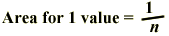

Wood chip length
State that each value in the data set contributes a rectangle of the same area to the histogram.

Drag over histogram rectangles to show that the proportion of values in classes equals the proportion of the total histogram area.
A batch of wood chips from various species of softwood is analysed for fibre length by a pulp and paper company that has just taken delivery of a large batch. The grade of chips is determined by the average fibre length since the longer fibres make stronger paper.